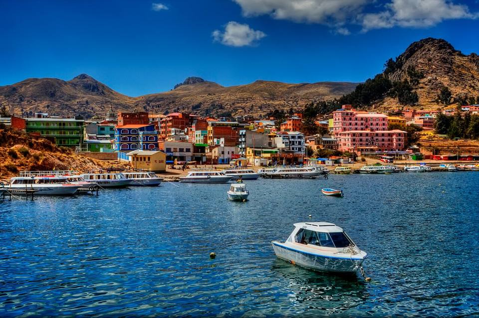
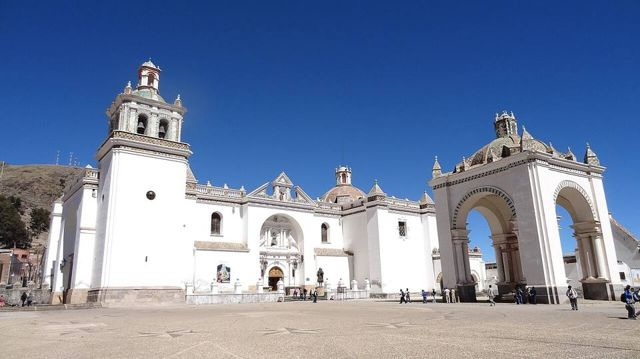
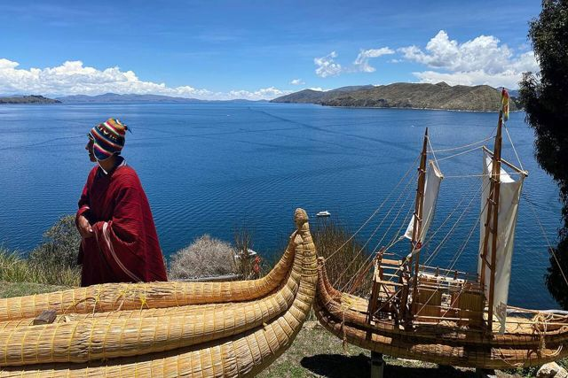
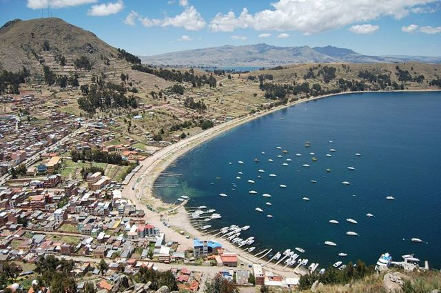
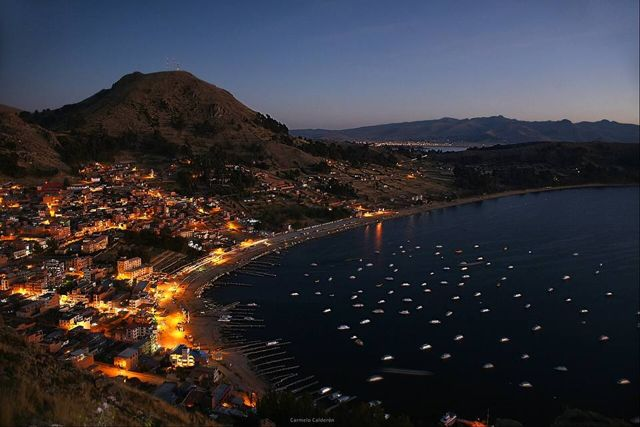
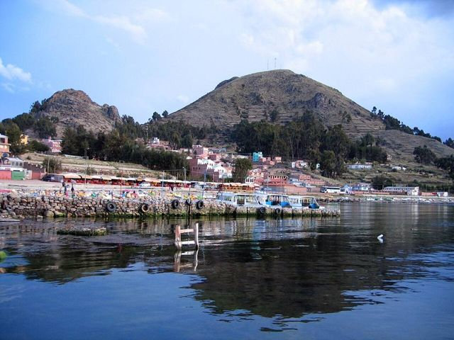
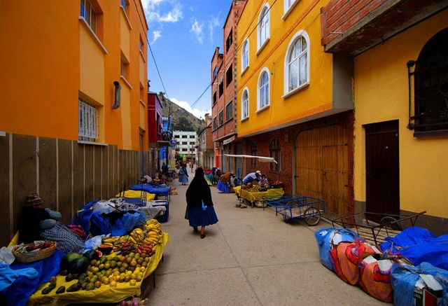

Copacabana (lac Titicaca)
Département de La Paz · Altiplano, lacs et salars

Copacabana est une petite ville de pèlerinage sur la rive du lac Titicaca, avec sa grande basilique blanche aux coupoles mauresques. On y mange la truite du lac sur la plage et on regarde le coucher de soleil depuis la colline du Calvario. C'est la porte d'entrée vers l'Isla del Sol.
3 841 maltitude
1 à 2 jourssur place
Haute altitude. Au-dessus de 3 500 m, le mal des montagnes (soroche) est fréquent. Arrivez progressivement, buvez beaucoup et ralentissez le premier jour.
À faire
- Basilique de la Virgen de Copacabana
- Coucher de soleil depuis le Cerro Calvario
- Truite du lac sur la plage
À goûter
- TruiteTruite du lac Titicaca ou des rivières de la Cordillère, frite ou grillée, avec riz, frites et salade. On la mange sur la plage de Copacabana et dans les petits restaurants des villages de montagne.
- Ispi et pejerreyPetits poissons du lac frits et croustillants, à manger entiers avec un peu de citron.
- Api con pastelBoisson chaude et épaisse de maïs violet, à la cannelle, avec un beignet au fromage saupoudré de sucre. Le petit-déjeuner des marchés.
Conseil. Traversée du détroit de Tiquina en barque (le bus traverse sur une barge).
À découvrir ici
- Fêtes Semaine sainte à CopacabanaDes milliers de pèlerins marchent toute la nuit depuis La Paz, environ 150 km, pour arriver au sanctuaire de la Vierge de Copacabana le Vendredi saint.
- Fêtes Vierge de CopacabanaLa patronne de la Bolivie est fêtée avec processions, danses et bénédictions de voitures devant la basilique. Autre grande fête le 2 février, pour la Chandeleur.
- Frontière Kasani – Yunguyo (par Copacabana)À 10 minutes de Copacabana, le passage le plus agréable vers le Pérou, au bord du lac. Des bus relient Copacabana à Puno en 3 h environ.
Comment aller à Copacabana
Isla de la Luna Bateau · 1 h
Tour en bateau combiné Isla del Sol + Isla de la Luna.
Isla del Sol Bateau · 1 h 30 à 2 h
Bateaux depuis la plage de Copacabana, départs le matin et en début d'après-midi.
La Paz Route (bus, voiture) · 3 h 30 à 4 h
Bus touristiques et minibus depuis le cimetière (Av. Baptista) ou par agence.
Garder ses papiers : on descend du bus à Tiquina.
Photos de Copacabana (lac Titicaca)







.jpg){kind=link}




Autres lieux de la région
 Isla del SolÎle sacrée des Incas : sentiers, ruines et vues sur la Cordillère Royale.
Isla del SolÎle sacrée des Incas : sentiers, ruines et vues sur la Cordillère Royale. Isla de la LunaPetite île voisine avec le temple des Vierges du Soleil (Iñak Uyu).
Isla de la LunaPetite île voisine avec le temple des Vierges du Soleil (Iñak Uyu). HuatajataVillage du lac Titicaca, berceau des bateaux de roseau (totora).
HuatajataVillage du lac Titicaca, berceau des bateaux de roseau (totora). Île de SurikiL'île des constructeurs de bateaux en roseau, dont ceux de l'expédition Ra II.
Île de SurikiL'île des constructeurs de bateaux en roseau, dont ceux de l'expédition Ra II. Isla ParitiPetite île du Titicaca et son musée de céramiques de Tiwanaku, trouvées sur place.
Isla ParitiPetite île du Titicaca et son musée de céramiques de Tiwanaku, trouvées sur place.